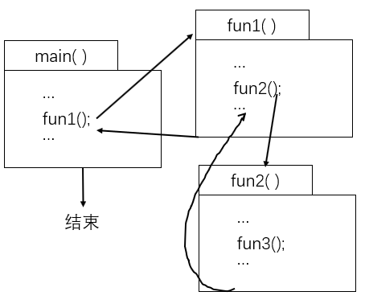
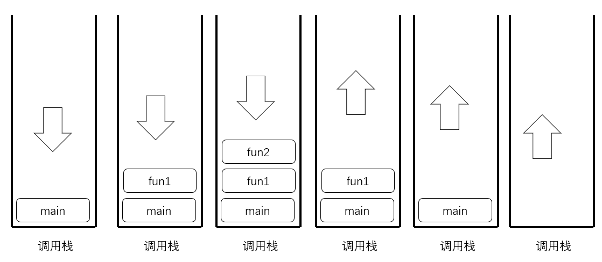
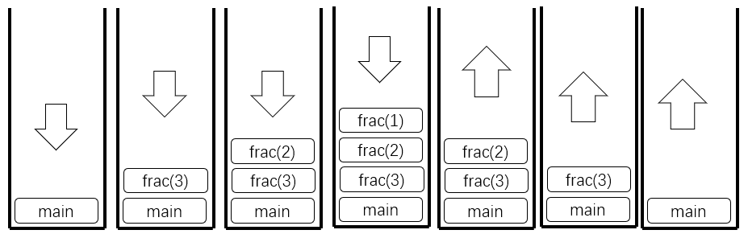
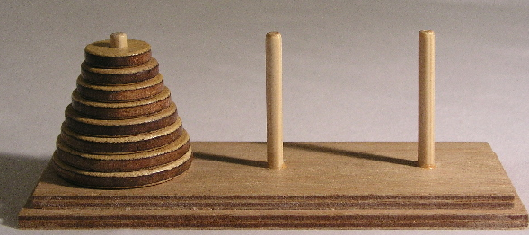

第七章
数组
本章主要内容
- 函数的定义和调用
- 变量的存储方式和生存周期
- 函数递归
7.1 为什么要用函数？
#include"stdio.h"
int main()
{
int sel=0, flag=0;
do{ show_menu();
sel=getchar();
switch(sel){
case '0': flag = 1; break;
case '1': do_something1(); break;
case '2': do_something1(); break;
case '3': do_something1(); break;
}
}while(0 == flag);
return 0;
}
实现封装和模块化
关于函数（function）：
- 一个c语言程序由一个或多个程序模块组成，每一个程序模块的物理表现是一个单独的源程序文件，大的程序分成多个模块，有利于分别编写和测试，有利于代码的复用；
- 一个源程序文件可以由多个函数组成（以及其他成分，比如预编译处理指令，全局变量和常量定义等），从语言的角度，函数是c语言语义上的基本模块；
- 任何独立的c语言程序（不包括函数库），都有且只能有一个
main函数，这个函数是这个程序的开始执行和结束的地方； - 函数都是平行的，也就是不能嵌套定义；
- 绝大部分函数可以互相调用（call），只有
main函数不行，它只能由操作系统来调用；
关于函数（function）：
- 对于用户来说，函数包括编译系统提供的标准库函数（比如
printf, scanf, sqrt, strlen等）、第三方提供的函数以及用户自定义的函数； - 从形式来看，可以分为；有返回值的函数、没有返回值的函数、有参数的函数、没有参数的函数
7.2 函数的定义
7.2.1 为何要函数定义？
用户自己的函数，先定义，再使用。
对于系统库函数，先声明，再使用。
7.2.2 函数定义: definition
类型 函数名(参数列表) //函数头
{
函数体；
}
类型是函数返回值的类型，可以是int，short, float, double, char等，如果函数没有返回值，可以用void;函数名的命名规则和标识符（变量、符号常量等）一致，不能是关键字，只能是字母a-zA-Z、数字0-9、下划线_，第一个字符不能是数字；参数表是需要传递进入函数的参数，在定义函数的时候，因为不知道具体传递进来的是什么数值，因此必须用变量来表示这些参数(称为形式参数，形参)，如果没有参数，可以空着，或void;函数体以{}来包括，当函数被调用，是从{开始，一直到}结束， 如果需要从函数中返回到调用者，则用return语句，如果函数需要返回一个值，则用return 值;
例：定义一个求阶乘的函数。
#include "stdio.h"
unsigned long frac(int n)
{
unsigned long result=1;
int i;
for(i=1; i<=n; i++)
result *= i;
return result;
}
int main()
{
int n;
unsigned long f;
printf("input n:"); scanf("%d", &n);
f=frac(n);
printf("%d!=%lu\n", 3, f);
return 0;
}
input n:6 3!=720 input n:65 3!=9223372036854775808
7.3 调用函数
7.3.1 函数调用的形式
//函数的定义
double max2(double a, double b)
{ return (a>b)?a:b; }
函数调用的形式：
- 函数调用语句：
max2(3,5); - 函数表达式：
x = a + max2(b,c); - 函数参数：
x = max2(a, max2(b, c));
7.3.2 函数的形参、实参
#include "stdio.h"
unsigned long frac(int n) //函数的定义
{
unsigned long result=1;
int i;
for(i=1; i<=n; i++)
result *= i;
return result;
}
int main()
{
int n;
unsigned long f;
printf("input n:"); scanf("%d", &n);
f=frac(n); //函数的调用
printf("%d!=%lu\n", 3, f);
return 0;
}
形式参数：在函数定义的时候，这些参数都没有具体的数值，所以是虚的，称为形式参数，或虚拟参数，简称形参，或虚参；
实际参数：在函数被调用的时候，必须代入具体的值到参数中，这些可以是具体的数值字面量，比如7, 3.14, 'a', "hello"等，所以是实的，称为实际参数，简称实参；
7.3.3 函数调用时的参数传递：虚实结合
#include "stdio.h"
int sqr(int n) //函数的定义
{
n = n*n;
return n;
}
int main()
{
int n=3, x=5;
printf("%d, %d\n", x, sqr(x));
printf("%d, %d\n", n, sqr(n));
return 0;
}
25, 5 9, 3
函数只有在被调用的时候，才会从虚-->实，也就是保存现场，实际分配内存，并把控制权转移到函数中，当函数运行结束，会释放分配的内存，并把控制权返还到保存的现场中；
当函数被调用，把调用者的参数值传递给函数对应的参数，注意这是值传递，也就是复制一份值，因此不会对原来的变量产生变化；
7.3.4 函数返回值
#include "stdio.h"
int sqr(int n) //函数的定义
{ n = n*n;
return (float)n;
}
void print2(int n) //函数的定义
{ printf("%d, %d\n", n, sqr(n));
}
int main()
{
int n=3, x=5;
print2(x);
print2(n);
return 0;
}
25, 5 9, 3
1. 函数的返回值是通过return语句来获取的，一个函数可以有多个return语句，函数一运行到return,就会立即停止函数，并返回到调用者的保存的现场，如果return后面有值，在返回的时候就会将该值返回，但是函数只能返回一个值；
2、函数返回值的类型，在定义的时候就已经确定了，如果return后的值的类型和定义时不同，会尝试转换其为定义的类型，若转换不了，则会产生编译错误；
3、若函数不需要返回值，在定义的时候指定函数返回值类型为void。
7.4 函数的声明和函数原型
#include "stdio.h"
int sqr(int n); //函数声明
void print2(int n); //函数声明
int main()
{
int n=3, x=5;
print2(x); //函数调用
print2(n); //函数调用
return 0;
}
int sqr(int n) //函数的定义, 函数原型
{ n = n*n;
return (float)n;
}
void print2(int n) //函数的定义，函数原型
{ printf("%d, %d\n", n, sqr(n));
}
函数原型：函数的首行；
函数声明：函数原型+;，函数的定义只能一次，但是可以有无数个声明。必须先定义，或者声明函数，才能调用函数。
7.5 函数的嵌套调用
7.5.1 函数的调用机制
 7.5.2 函数的递归调用
函数内调用自己，称为递归调用。
为了不会导致无穷尽的调用，必须有退出机制。
//求阶乘
#include "stdio.h"
unsigned long frac(int n)
{ if(1==n)return 1;
else
return frac(n-1)*n;
}
int main()
{
unsigned long a;
int n;
printf("input n:");
scanf("%d", &n);
printf("%d!=%lu%\n",
n, frac(n));
return 0;
}

例：汉诺塔。
如下，塔内有三个基座A、B、C, 开始时A基座上有n个盘子，以从大到小放置（大的在下），现将盘子移动到C基座，可以利用B基座来中转，但要求所有时刻都必须保证大的在下面，小盘子在上面，而且一次只能移动一个盘子。


基本思路：
1. 对于n个盘子，委托另一个人（设为甲）把n-1个盘子借助C支座从A支座移动到B，自己把最后一个盘子（最大的）从A支座移动到C，然后再找甲把前面在B支座的n-1个盘子借助A支座移动到C支座；
2. 对于甲来说，要移动n-1个盘子，那么可以委托另一个人（设为乙）把n-2个盘子移动到空闲的支座，然后甲自己把第n-1个盘子移动到目的支座，再找乙把n-2个盘子移动到目的支座；
3. 对于乙，可以继续委托，重复第2步，这里关键时搞清楚是原始支座、目的支座、空闲支座；
4. 直到委托到最后一个人，由于他只需要移动一个盘子，所以可以直接移动，不需要进行委托了。
#include "stdio.h"
void hanoi(int n, char source, char help, char dest);
int main()
{ int n ; //盘子的数目
printf("input n:"); scanf("%d", &n);
hanoi(n, 'A', 'B', 'C');
return 0;
}
void hanoi(int n, char source, char help, char dest)
{ if( n ==1 )
printf("move %c --> %c\n", source, dest);
else{
hanoi(n-1, source, dest, help);
printf("move %c --> %c\n", source, dest);
hanoi(n-1, help, source, dest);
}
}
input n:3 move A --> C move A --> B move C --> B move A --> C move B --> A move B --> C move A --> C